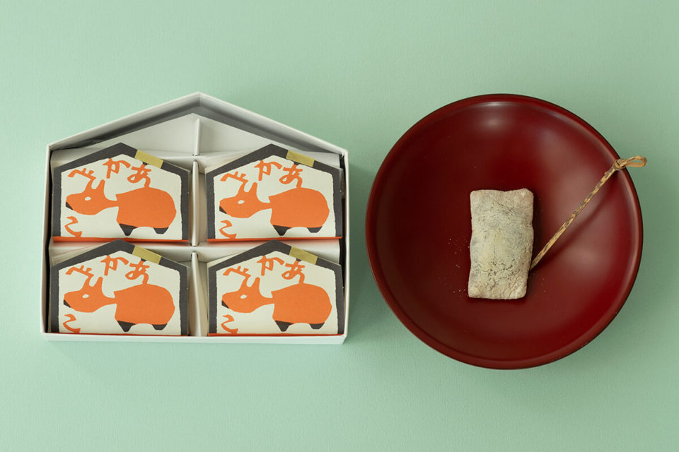
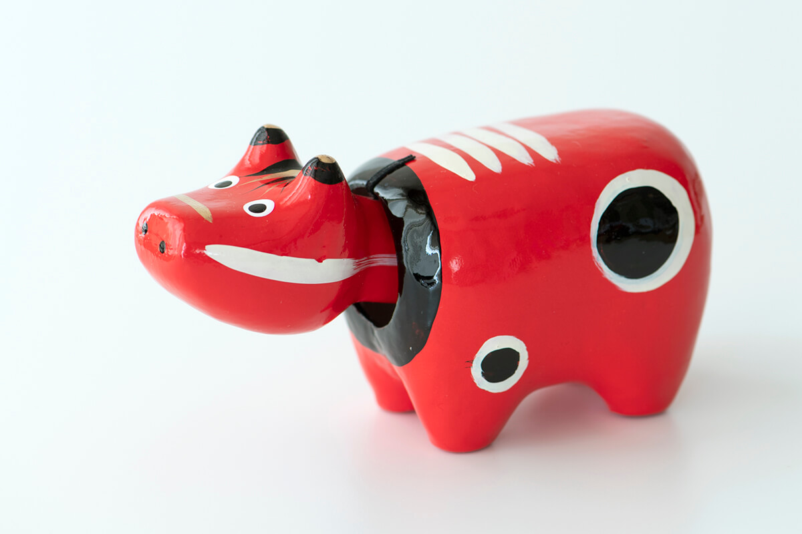
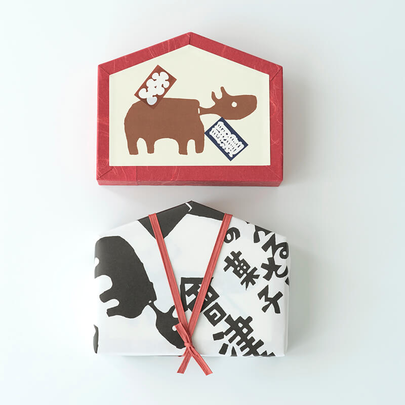

Префектура Фукусима · Айдзу-Вакамацу · сладости
«Акабэко» из Айдзу-Вакамацу: красная корова из игрушки стала сладостью

Красная корова с качающейся головой давно стала символом Айдзу. В старой кондитерской у замка Цуругадзё из неё сделали сладость: мягкое гюхи с гречихой, сахаром васамбон и отборной фасолью адзуки.
Кондитерская
Сладости по мотивам народных игрушек
«Айдзу Аой» это старая кондитерская японских сладостей в Айдзу-Вакамацу, городе на западе префектуры Фукусима. Главный магазин стоит совсем рядом с замком Цуругадзё, так что кондитерскую легко совместить с прогулкой к замку.
Славу кондитерской принесли сладости, придуманные по мотивам народных игрушек Айдзу. «Кобоси» повторяет форму окиагари-кобоси, маленькой неваляшки. Это сладость в технике исигоромо, где начинку покрывают тонкой сахарной корочкой. Гречишное печенье «Тодзин-дако» напоминает о воздушных змеях Айдзу, в узорах которых видно влияние «южных варваров», как в Японии называли европейцев, приплывавших в XVI веке.
Среди народных сладостей кондитерской есть ещё одна, о которой стоит рассказать отдельно: «Акабэко».
Сладость
«Акабэко»: гюхи в виде красной коровы

«Акабэко» это гюхи, мягкая тягучая сладость из рисовой муки. Для неё берут лучшее, что можно найти: неочищенную гречиху, тонкий сахар васамбон и крупную фасоль адзуки сорта дайнагон. Образ взят у акабэко, красной коровы из папье-маше, одной из самых известных игрушек Айдзу. Сама игрушка родилась из легенды храма Фукуман Кокудзосон в городке Янаидзу.
Гюхи приготовлено точно в меру: оно сытное, упругое и при этом мягкое. Исследовательница японских сладостей, которая много лет пишет о народных сладостях Японии, часто подаёт «Акабэко» гостям к чаю.
«Каждый раз, когда я угощаю „Акабэко“, слышу одно и то же: какая милая и какая вкусная! И разговор сразу оживает»
исследовательница японских сладостей
Упаковка
Рисунки Китиэмона Окамуры

Рисунок на коробке сделал Китиэмон Окамура (1916–2002), красильщик тканей и участник движения мингэй, которое собирало и ценило простые вещи народного ремесла. Окамура учился у Кэйсукэ Сэридзавы (1895–1984), одного из главных мастеров крашения по трафарету в Японии XX века. Он обошёл всю страну, изучая местные обычаи и ремёсла, и оставил заметные работы в оформлении книг и в окрашенных тканях.
Обёрточная бумага «Айдзу Аой» тоже его работа. На белом фоне синей краской с юмором нарисованы акабэко, кобоси и другие игрушки Айдзу.
«Айдзу Аой», главный магазин
- Адрес
- префектура Фукусима, Айдзу-Вакамацу, Отэ-мати, 4-18
- Телефон
- +81 242-26-5555
- Часы работы
- 9:00–18:00
- Выходные
- без выходных
- Цены / Вход
- «Акабэко», 8 штук, 1250 иен (2019 год)
Фото: Вакана Баба.